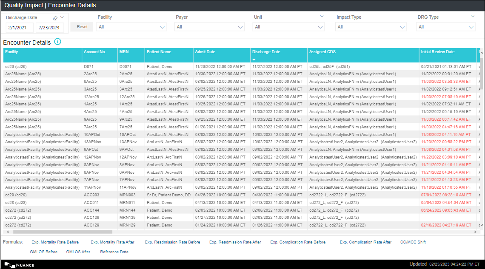
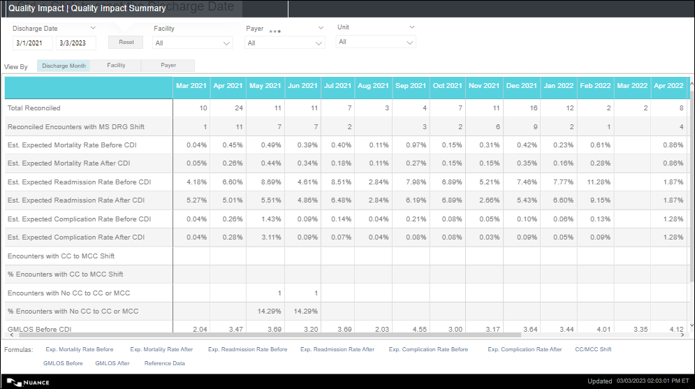

Encounter Details
Overview: The Encounter Details dashboard enables CDI Directors to analyze the quality impact of the CDI activity at the encounter level and take appropriate action.
- By default, the chart displays the data for the last 1 calendar month.
- Displays the encounter level details of each reconciled encounter.
- Each row represents an encounter.
- Data in the chart is sorted by the Discharge Date in descending order.
Navigation: On the Analytics home page left side panel, navigate to .
On the top panel, you can select desired values for the slicers (refer Report Slicers ) and the corresponding data gets filtered in the charts.
For filters on all pages, refer Filters on all Pages.
For Footnotes, refer Footnotes.

Encounter Details Tabular Chart
This table displays the encounter level details of each reconciled encounter. Each row represents an encounter. Data in the chart is sorted by the Discharge Date in descending order.

| column | Description |
|---|---|
| Facility | The facility assigned to the encounter in the format Facility Description (Facility ID). |
| Account No. | The Account Number assigned to the encounter. |
| MRN | The MRN assigned to the encounter. Example: MRN2021001 |
| Patient Name | The name of the patient associated with the encounter.
Example: Last Name, First Name. |
| Admit Date |
The admission date and time assigned to the encounter in the facility's timezone. Example: 08/08/2019 12:00:00 AM MST |
| Discharge Date |
The Discharge Date and Time assigned to the encounter in the facility's timezone. This column is blank for the encounters that do not have a discharge date assigned. Example: 08/08/2019 12:00:00 AM MST. |
| Assigned CDS |
The CDS assigned to the encounter in the format Last Name, First Name MI (CDS ID). Example: Ryan, Melissa (rmelissa). |
| Initial Review Date |
The date and time when the initial review was performed on the encounter. The date is displayed in the Facility's time-zone. Example: 05/24/2020 10:10:00 AM ET Note:
If the Initial Review Date/time is
after the Discharge Date/Time, Initial Review Date/Time is
displayed in the red font. |
| Initial Review CDS |
The name of the CDS who performed the initial review in the format Last Name, First Name MI (CDS ID). Example: Ryan, Melissa (rmelissa). |
| Tracking Codes |
Displays the tracking codes assigned to the encounter in comma separated format. Example: Quality Review, Prov Education. |
| Rank at Initial Review |
The rank assigned to the encounter prior to the Initial Review. This column is blank for the encounters that do not have a ‘Rank at Initial Review' assigned. |
| W MS-DRG |
Displays the Working MS-DRG along with the description displayed on the Review page. Example: 872 - SEPTICEMIA OR SEVERE SEPSIS WITHOUT MV >96 HOURS WITHOUT MAJOR COMPLICATION OR COMORBIDITY (MCC). |
| W MS-DRG WT |
Displays the WT associated with the Working MS DRG displayed on the Review page. Example: 1.0393. |
| W MS-DRG CC/MCC Designation |
Displays the CC/MCC indicator associated with the Working MS DRG. Example: CC, MCC, No CC. |
| W-SOI |
Displays the 'SOI' value from the working review. Example: 2. |
| W-ROM |
Displays the 'ROM' value from the working review. Example: 3 |
| W MS-DRG AMLOS |
Displays the 'AMLOS' value from the working review. Example: 3.1. |
| W-MS-DRG GMLOS |
Displays the 'GMLOS ' value from the working review. Example: 3.2. Note:
If the GMLOS associated with the
primary working DRG is not available, then the GMLOS
associated with the advanced working DRG is
displayed. |
| P MS-DRG |
Displays the' Possible MS-DRG along with the description displayed on the Review page. Example: 872 - SEPTICEMIA OR SEVERE SEPSIS WITHOUT MV >96 HOURS WITHOUT MAJOR COMPLICATION OR COMORBIDITY (MCC). Note:
This column displays the ‘Working MS
DRG’ value in the orange font for the encounters for which
‘Possible MS DRG’ is blank or null. |
| P MS-DRG WT |
Displays the WT associated with the Possible MS-DRG displayed on the Review page. Example: 1.0393. Note:
This column displays the ‘Working MS DRG
WT’ value in the orange font for the encounters for which
‘Possible MS DRG’ is blank or null. |
| P MS-DRG CC/MCC Designation |
Displays the CC/MCC indicator associated with the Possible MS DRG. Example: CC, MCC, No CC. |
| R MS-DRG |
Displays both code and description of the Reconciliation Assessment MS-DRG along with the description displayed on the Reconciliation page. Example: 872 - SEPTICEMIA OR SEVERE SEPSIS WITHOUT MV >96 HOURS WITHOUT MAJOR COMPLICATION OR COMORBIDITY (MCC). |
| R MS-DRG WT |
Displays the WT associated with the Reconciliation Assessment MS-DRG displayed on the Reconciliation page. Example: 1.0393. |
| R MS-DRG CC/MCC Designation |
Displays the CC/MCC indicator associated with the Reconciliation Assessment MS DRG. Example: CC, MCC, No CC. |
| R-SOI |
Displays the 'SOI' value from the Reconciliation Assessment. Example: 1. |
| R-ROM |
Displays the 'ROM' value from the Reconciliation Assessment. Example: 1. |
| R MS-DRG AMLOS |
Displays the 'AMLOS' associated with the MS-DRG Reconciliation Assessment. Example: 3.1. |
| R MS-DRG GMLOS |
Displays the 'GMLOS' associated with the MS-DRG Reconciliation Assessment. Example: 2.4. |
| F MS-DRG | Displays both code and description of the Final Coded MS-DRG
along with the description displayed on the Reconciliation page.
Example: 872 - SEPTICEMIA OR SEVERE SEPSIS WITHOUT MV >96
HOURS WITHOUT MAJOR COMPLICATION OR COMORBIDITY (MCC). Note: This column is blank for the encounters
that do not have a ‘Initial Review Date/Time'. |
| F MS-DRG WT |
Displays the WT associated with the Final Coded MS-DRG displayed on the Reconciliation page. Example: 1.0393. Note:
This column is blank for the encounters
that do not have a ‘Initial Review Date/Time'. |
| F MS-DRG CC/MCC Designation |
Displays the Type associated with the Final MS DRG Example: CC, MCC, No CC. |
| F-SOI |
Displays the "F-SOI" value from Final Coded Summary. Example: 2. |
| F-ROM |
Displays the 'F-ROM' value from Final Coded Summary. Example: 3. |
| F MS-DRG AMLOS |
Displays the AMLOS associated with the Final Coded MS DRG. Example: 3.1. |
| F MS-DRG GMLOS |
Displays the GMLOS associated with the Final Coded MS DRG. Example: 3.2. |
| MS-DRG Variance |
Displays the shift in the WT at the encounter level. Example: 1.0178. Encounter Variance = Final Coded DRG WT - Reconciliation Assessment DRG WT (or Variance = Final Coded DRG WT - Working DRG WT when Discharge Date < 11/14/19 or Reconciliation Assessment DRG is blank). Note:
Encounter Variance can be negative, positive, or zero. Negative variance is displayed in the red font. Encounter Variance is not calculated for the encounters that do not have an initial review date. Review Not Needed encounters are not considered for this metric caalculation. Rounded to 4 decimal places. E.g. 2.1868. |
| Blended Rate |
The Blended Rate associated with the payer/Grouper assigned to the encounter. Example: 7512. When the Blended Rate is not available, the Operating Federal rate is displayed. |
| Reimbursement Impact |
The ‘Reimbursement Impact’ value for the encounter. Example: $ 5,234.
|
| Estimated Exp. Mortality Rate Before CDI |
Displays the CareChex Exp. Mortality Rate Before CDI value for the encounter. The value is displayed in %. Example: 0.10% Note:
If the Pre CDI MS-DRG associated with the encounter is not available in the CareChex Reference file and Post CDI MS-DRG associated with the encounter is available, then CareChex Exp. Mortality Rate Before CDI value for the encounter is equal to the CareChex Exp. Mortality Rate After CDI value for the encounter. If both Pre and Post CDI MS-DRGs associated with the encounter are not available in the CareChex Reference file, then this column is blank for the encounter. |
| Estimated Exp. Mortality Rate After CDI |
Displays the CareChex Exp. Mortality Rate After CDI value for the encounter. The value is displayed in %. Example: 0.10% Note:
If the Post CDI MS-DRG associated with the encounter is not available in the CareChex Reference file and Pre CDI MS-DRG associated with the encounter is available, then CareChex Exp. Mortality Rate After CDI value for the encounter is equal to the CareChex Exp. Mortality Rate Before CDI value for the encounter. If both Pre and Post CDI MS-DRGs associated with the encounter are not available in the CareChex Reference file, then this column is blank for the encounter. |
| Estimated Exp. Readmission Rate Before CDI |
Displays the CareChex Exp. Readmission Rate Before CDI value for the encounter. The value is displayed in %. Example: 0.10%. Note:
If the Pre CDI MS-DRG associated with the encounter is not available in the CareChex Reference file and Post CDI MS-DRG associated with the encounter is available, then CareChex Exp. Readmission Rate Before CDI value for the encounter is equal to the CareChex Exp. Readmission Rate After CDI value for the encounter. If both Pre and Post CDI MS-DRGs associated with the encounter are not available in the CareChex Reference file, then this column is blank for the encounter. |
| Estimated Exp. Readmission Rate After CDI |
Displays the CareChex Exp. Readmission Rate After CDI value for the encounter. The value is displayed in %. Example: 0.10%. Note:
If the Post CDI MS-DRG associated with the encounter is not available in the CareChex Reference file and Pre CDI MS-DRG associated with the encounter is available, then CareChex Exp. Readmission Rate After CDI value for the encounter is equal to the CareChex Exp. Readmission Rate Before CDI value for the encounter. If both Pre and Post CDI MS-DRGs associated with the encounter are not available in the CareChex Reference file, then this column is blank for the encounter. |
| Estimated Exp. Complication Rate Before CDI |
displays the CareChex Exp. Complication Rate Before CDI value for the encounter. The value is displayed in %. Example: 0.10% Note:
If the Pre CDI MS-DRG associated with the encounter is not available in the CareChex Reference file and Post CDI MS-DRG associated with the encounter is available, then CareChex Exp. Complication Rate Before CDI value for the encounter is equal to the CareChex Exp. Complication Rate After CDI value for the encounter. If both Pre and Post CDI MS-DRGs associated with the encounter are not available in the CareChex Reference file, then this column is blank for the encounter. |
| Estimated Exp. Complication Rate After CDI |
displays the CareChex Exp. Complication Rate After CDI value for the encounter. The value is displayed in %. Example: 0.10%. Note:
If the Post CDI MS-DRG associated with the encounter is not available in the CareChex Reference file and Pre CDI MS-DRG associated with the encounter is available, then CareChex Exp. Complication Rate After CDI value for the encounter is equal to the CareChex Exp. Complication Rate Before CDI value for the encounter. If both Pre and Post CDI MS-DRGs associated with the encounter are not available in the CareChex Reference file, then this column is blank for the encounter. |
| Impact Type |
The Impact Type assigned to the encounter
|
| Encounter Status |
The Encounter Status assigned to the encounter. Example: Reconciled Impact, Auto-Reconciled. |
| Payer | The Payer assigned to the encounter in the format Payer
Description (Payer ID). Example: Medicare (MEDC). |
| Grouper | The Grouper version associated with the payer assigned to the
encounter. Example: CMS 38.0. |
| Unit | The Unit assigned to the encounter. Example: ICU. |
| Patient Type | The Patient Type assigned to the encounter. Example: Inpatient |
| Visit Type |
The Visit Type assigned to the encounter. Example: OBS. |
| Discharge Status | The Display Status assigned to the encounter. Format: Discharge Status ID- Description Example: 01- 01 Self Care |
| Slicer | Description |
|---|---|
| Discharge Date |
|
| Reset Button |
|
| Facility |
|
| Payer |
|
| Unit |
|
| Impact Type |
Displays the following values:
|
| DRG Type |
Displays the following values:
Default: ALL. |
| Filter | Description |
|---|---|
| Patient Type |
|
| Admit Service |
|
| Visit Type |
|
| DRG Specialty |
|
| Formula | Text on hover |
|---|---|
| Exp. Mortality Rate Before | The avg. of CareChex Exp. Mortality Rate values associated with the Final Coded MS-DRGs of all Auto-Reconciled and Reconciled-No Impact and Reconciled Impact (Impact Type: SOI/ROM Impact, Unassigned Impact with no shift in the WT) encounters and the CareChex Exp. Mortality Rate values associated with the Reconciliation assessment MS-DRG of all Reconciled Impact (Impact Type: Financial, Both, Unassigned Impact with shift in the WT) encounters that meet the report criteria. |
| Exp. Mortality Rate After | The avg. of CareChex Exp. Mortality Rate values associated with the Final Coded MS-DRGs of all Auto-Reconciled, Reconciled- No Impact, and Reconciled Impact (Impact Type: SOI/ROM Impact, Both, Financial, Unassigned) encounters that meet the report criteria . (Rounded 2 decimal places E.g., 0.84%). |
| Exp. Readmission Rate Before | The avg. of CareChex Exp. Mortality Rate values associated with the Final Coded MS-DRGs of all Auto-Reconciled and Reconciled-No Impact and Reconciled Impact (Impact Type: SOI/ROM Impact, Unassigned Impact with no shift in the WT) encounters and the CareChex Exp. Mortality Rate values associated with the Reconciliation assessment MS-DRG of all Reconciled Impact (Impact Type: Financial, Both, Unassigned Impact with shift in the WT) encounters that meet the report criteria. |
| Exp. Readmission Rate After | The avg. of CareChex Exp. Readmission Rate values associated with the Final Coded MS-DRGs of all Auto-Reconciled, Reconciled- No Impact, and Reconciled Impact (Impact Type: SOI/ROM Impact, Both, Financial, Unassigned) encounters that meet the report criteria . (Rounded 2 decimal places E.g., 0.84%). |
| Exp. Complication Rate Before | The avg. of CareChex Exp. Mortality Rate values associated with the Final Coded MS-DRGs of all Auto-Reconciled and Reconciled-No Impact and Reconciled Impact (Impact Type: SOI/ROM Impact, Unassigned Impact with no shift in the WT) encounters and the CareChex Exp. Mortality Rate values associated with the Reconciliation assessment MS-DRG of all Reconciled Impact (Impact Type: Financial, Both, Unassigned Impact with shift in the WT) encounters that meet the report criteria. |
| Exp. Complication Rate After | The avg. of CareChex Exp. Complication Rate values associated with the Final Coded MS-DRGs of all Auto-Reconciled, Reconciled- No Impact, and Reconciled Impact (Impact Type: SOI/ROM Impact, Both, Financial, Unassigned) encounters that meet the report criteria . (Rounded 2 decimal places E.g., 0.84%). |
| CC/MCC Shift |
% Encounters with CC to MCC Shift = Count of Reconciled Encounters with DRG Shift in which the pre CDI DRG is a CC and the final coded DRG is MCC / Count of Reconciled Encounters with DRG Shift x100. % Encounters with No CC to CC or MCC = Count of Reconciled Encounters with DRG Shift in which the pre CDI DRG is a No CC and the final coded DRG is either CC or MCC / Count of Reconciled Encounters with DRG Shift x100. |
| GMLOS Before | The avg. of GMLOS values associated with the Final Coded MS-DRGs of all Auto-Reconciled and Reconciled- No Impact and Reconciled Impact (Impact Type: SOI/ROM Impact, Unassigned Impact with no shift in the WT) encounters and the GMLOS values associated with the Reconciliation assessment MS-DRG of all Reconciled Impact (Impact Type: Financial, Both, Unassigned Impact with shift in the WT) encounters that meet the report criteria. |
| GMLOS After | The avg. of GMLOS values associated with the Final Coded MS-DRGs of all Auto-Reconciled, Reconciled- No Impact, and Reconciled Impact (Impact Type: SOI/ROM Impact, Both, Financial, Unassigned) encounters that meet the report criteria. Rounded 2 decimal places E.g., 3.60. |
| Reference Data | MS-DRG level Risk Adjusted Expected Mortality/Readmission/Complication Rate values generated using the data for the top100 CareChex hospitals (Federal year 2019-2021) are used to identify the pre and post CDI expected rates for an encounter. |